The Same-Origin Policy
by Eunsuk Kang, Santiago Perez De Rosso, and Daniel Jackson
Eunsuk Kang is a PhD candidate and a member of the Software Design Group at MIT. He received his SM (Master of Science) in Computer Science from MIT (2010), and a Bachelor of Software Engineering from the University of Waterloo (2007). His research projects have focused on developing tools and techniques for software modeling and verification, with applications to security and safety-critical systems.
Santiago Perez De Rosso is a PhD student in the Software Design Group at MIT. He received his SM in Computer Science from MIT (2015), and an undergraduate degree from ITBA (2011). He used to work at Google, developing frameworks and tools to make engineers more productive (2012). He currently spends most of his time thinking about design and version control.
Daniel Jackson is a professor in the Department of Electrical Engineering and Computer Science at MIT, and leads the Software Design Group in the Computer Science and Artificial Intelligence Laboratory. He received an MA from Oxford University (1984) in Physics, and his SM (1988) and PhD (1992) in Computer Science from MIT. He was a software engineer for Logica UK Ltd. (1984-1986), Assistant Professor of Computer Science at Carnegie Mellon University (1992-1997), and has been at MIT since 1997. He has broad interests in software engineering, especially in development methods, design and specification, formal methods, and safety critical systems.
Introduction
The same-origin policy (SOP) is an important part of the security mechanism of every modern browser. It controls when scripts running in a browser can communicate with one another (roughly, when they originate from the same website). First introduced in Netscape Navigator, the SOP now plays a critical role in the security of web applications; without it, it would be far easier for a malicious hacker to peruse your private photos on Facebook, read your email, or empty your bank account.
But the SOP is far from perfect. At times, it is too restrictive; there are cases (such as mashups) in which scripts from different origins should be able to share a resource but cannot. At other times it is not restrictive enough, leaving corner cases that can be exploited using common attacks such as cross-site request forgery. Furthermore, the design of the SOP has evolved organically over the years and puzzles many developers.
The goal of this chapter is to capture the essence of this important—yet often misunderstood—feature. In particular, we will attempt to answer the following questions:
- Why is the SOP necessary? What are the types of security violations that it prevents?
- How is the behavior of a web application affected by the SOP?
- What are different mechanisms for bypassing the SOP?
- How secure are these mechanisms? What are potential security issues that they introduce?
Covering the SOP in its entirety is a daunting task, given the complexity of the parts that are involved—web servers, browsers, HTTP, HTML documents, client-side scripts, and so on. We would likely get bogged down by the gritty details of all these parts (and consume our 500 lines before even reaching SOP). But how can we hope to be precise without representing crucial details?
Modeling with Alloy
This chapter is somewhat different from others in this book. Instead of building a working implementation, we will construct an executable model that serves as a simple yet precise description of the SOP. Like an implementation, the model can be executed to explore dynamic behaviors of the system, but unlike an implementation, the model omits low-level details that may get in the way of understanding the essential concepts.
The approach we take might be called “agile modeling” because of its similarities to agile programming. We work incrementally, assembling the model bit by bit. Our evolving model is at every point something that can be executed. We formulate and run tests as we go, so that by the end we have not only the model itself but also a collection of properties that it satisfies.
To construct this model, we use Alloy, a language for modeling and analyzing software design. An Alloy model cannot be executed in the traditional sense of program execution. Instead, a model can be (1) simulated to produce an instance, which represents a valid scenario or configuration of a system, and (2) checked to see whether the model satisfies a desired property.
Despite the above similarities, agile modeling differs from agile programming in one key respect: Although we’ll be running tests, we actually won’t be writing any. Alloy’s analyzer generates test cases automatically, and all that needs to be provided is the property to be checked. Needless to say, this saves a lot of trouble (and text). The analyzer actually executes all possible test cases up to a certain size (called a scope); this typically means generating all starting states with at most some number of objects, and then choosing operations and arguments to apply up to some number of steps. Because so many tests (typically billions) are executed, and because all possible configurations that a state can take are covered (albeit within the scope), this analysis tends to expose bugs more effectively than conventional testing (and is sometimes described as “bounded verification”).
Simplifications
Because the SOP operates in the context of browsers, servers, HTTP, and so on, a complete description would be overwhelming. So our model (like all models) abstracts away irrelevant aspects, such as how network packets are structured and routed. But it also simplifies some relevant aspects, which means that the model cannot fully account for all possible security vulnerabilities.
For example, we treat HTTP requests like remote procedure calls, ignoring the fact that responses to requests might come out of order. We also assume that DNS (the domain name service) is static, so we cannot consider attacks in which a DNS binding changes during an interaction. In principle, though, it would be possible to extend our model to cover all these aspects, although it’s in the very nature of security analysis that no model (even if it represents the entire codebase) can be guaranteed to be complete.
Roadmap
Here is the order in which we will proceed with our model of the SOP. We will begin by building models of three key components that we need in order for us to talk about the SOP: HTTP, the browser, and client-side scripting. We will build on top of these basic models to define what it means for a web application to be secure, and then introduce the SOP as a mechanism that attempts to achieve the required security properties.
We will then see that the SOP can sometimes be too restrictive, getting in the way of a web application’s proper functioning. So we will introduce four different techniques that are commonly used to bypass the restrictions that are imposed by the policy.
Feel free to explore the sections in any order you’d like. If you are new to Alloy, we recommend starting with the first three sections (HTTP, Browser, and Script), as they introduce some of the basic concepts of the modeling language. While you are making your way through the chapter, we also encourage you to play with the models in the Alloy Analyzer; run them, explore the generated scenarios, and try making modifications and seeing their effects. It is freely available for download.
Model of the Web
HTTP
The first step in building an Alloy model is to declare some sets of objects. Let’s start with resources:
sig Resource {}
The keyword sig identifies this as an Alloy signature
declaration. This introduces a set of resource objects; think of
these, just like the objects of a class with no instance variables, as
blobs that have identity but no content. When the analysis runs, this
set will be determined, just as a class in an object-oriented language
comes to denote a set of objects when the program executes.
Resources are named by URLs (uniform resource locators):
sig Url {
protocol: Protocol,
host: Domain,
port: lone Port,
path: Path
}
sig Protocol, Port, Path {}
sig Domain { subsumes: set Domain }
Here we have five signature declarations, introducing a set of URLs
and four additional sets for each of the basic kinds of objects they
comprise. Within the URL declaration, we have four fields. Fields are
like instance variables in a class; if u is a URL, for example, then
u.protocol would represent the protocol of that URL (just like dot
in Java). But in fact, as we’ll see later, these fields are
relations. You can think of each one as if it were a two-column
database table. Thus protocol is a table with the first column
containing URLs and the second column containing protocols. And the
innocuous looking dot operator is in fact a rather general kind of
relational join, so that you could also write protocol.p for all the
URLs with a protocol p—but more on that later.
Note that paths, unlike URLs, are treated as if they have
no structure—a simplification. The keyword lone (which can be
read “less than or equal to one”) says that each URL has at most one
port. The path is the string that follows the host name in the URL,
and which (for a simple static server) corresponds to the file path of
the resource; we’re assuming that it’s always present, but can be an
empty path.
Let us introduce clients and servers, each of which contains a mapping from paths to resources:
abstract sig Endpoint {}
abstract sig Client extends Endpoint {}
abstract sig Server extends Endpoint {
resources: Path -> lone Resource
}
The extends keyword introduces a subset, so the set Client of all
clients, for example, is a subset of the set Endpoint of all
endpoints. Extensions are disjoint, so no endpoint is both a client
and a server. The abstract keyword says that all extensions of a
signature exhaust it, so its occurrence in the declaration of
Endpoint, for example, says that every endpoint must belong to one
of the subsets (at this point, Client and Server). For a server
s, the expression s.resources will denote a map from paths to
resources (hence the arrow in the declaration). Recall that each field
is actually a relation that includes the owning signature as a first
column, so this field represents a three-column relation on Server,
Path and Resource.
To map a URL to a server, we introduce a set Dns of domain name
servers, each with a mapping from domains to servers:
one sig Dns {
map: Domain -> Server
}
The keyword one in the signature declaration means that (for
simplicity) we’re going to assume exactly one domain name server, and
there will be a single DNS mapping, given by the expression Dns.map.
Again, as with the serving resources, this could be dynamic (and in
fact there are known security attacks that rely on changing DNS
bindings during an interaction) but we’re simplifying.
In order to model HTTP requests, we also need the concept of cookies, so let’s declare them:
sig Cookie {
domains: set Domain
}
Each cookie is scoped with a set of domains; this captures the fact
that a cookie can apply to *.mit.edu, which would include all
domains with the suffix mit.edu.
Finally, we can put this all together to construct a model of HTTP requests:
abstract sig HttpRequest extends Call {
url: Url,
sentCookies: set Cookie,
body: lone Resource,
receivedCookies: set Cookie,
response: lone Resource,
}{
from in Client
to in Dns.map[url.host]
}
We’re modeling an HTTP request and response in a single object; the
url, sentCookies and body are sent by the client, and the
receivedCookies and response are sent back by the server.
When writing the HttpRequest signature, we found that it contained
generic features of calls, namely that they are from and to particular
things. So we actually wrote a little Alloy module that declares the
Call signature, and to use it here we need to import it:
open call[Endpoint]
It’s a polymorphic module, so it’s instantiated with Endpoint, the
set of things calls are from and to. (The module appears in full in
Section: Appendix: Reusing Modules in Alloy.)
Following the field declarations in HttpRequest is a collection of
constraints. Each of these constraints applies to all members of the
set of HTTP requests. The constraints say that (1) each request comes
from a client, and (2) each request is sent to one of the servers
specified by the URL host under the DNS mapping.
One of the prominent features of Alloy is that a model, no matter how
simple or detailed, can be executed at any time to generate sample
system instances. Let’s use the run command to ask the Alloy
Analyzer to execute the HTTP model that we have so far:
run {} for 3 -- generate an instance with up to 3 objects of every signature type
As soon as the analyzer finds a possible instance of the system, it automatically produces a diagram of the instance, like in Figure: A possible instance.
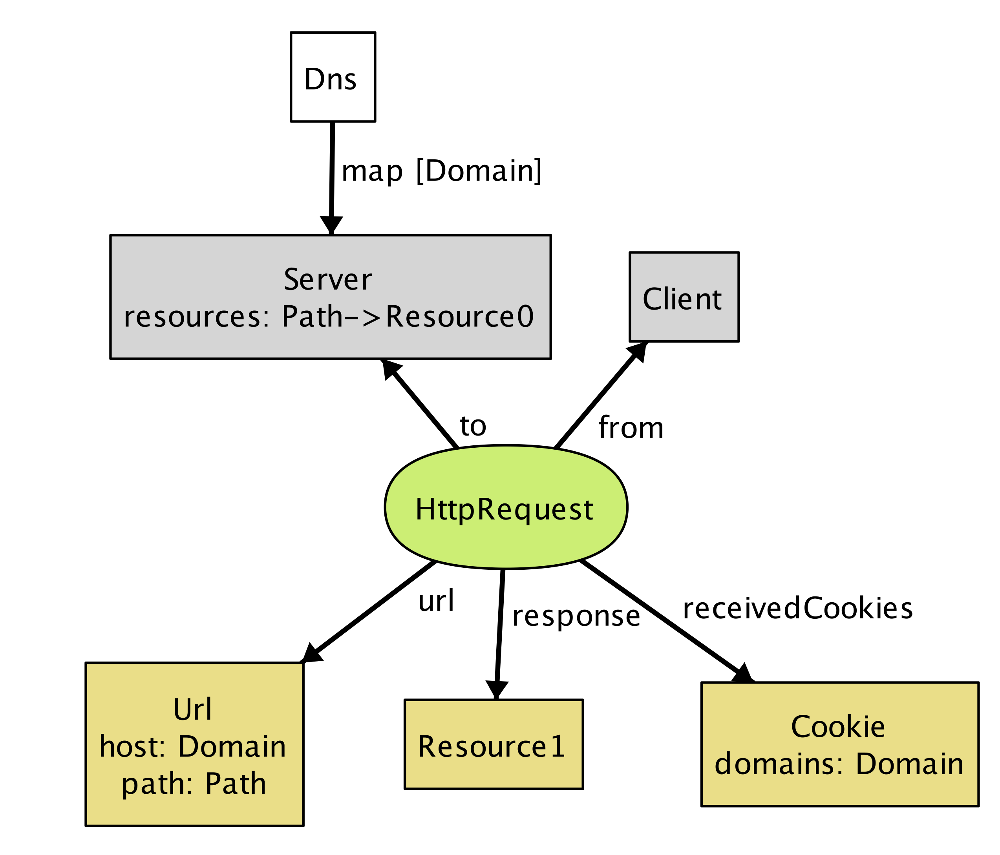
This instance shows a client (represented by nodeClient) sending an
HttpRequest to Server, which, in response, returns a resource
object and instructs the client to store Cookie at Domain.
Even though this is a tiny instance with seemingly few details, it
signals a flaw in our model. Note that the resource returned from the
request (Resource1) does not exist in the server. We neglected to
specify an obvious fact about the server; namely, that every response
to a request is a resource that the server stores. We can go back to
our definition of HttpRequest and add a constraint:
abstract sig HttpRequest extends Call { ... }{
...
response = to.resources[url.path]
}
Rerunning now produces instances without the flaw.
Instead of generating sample instances, we can ask the analyzer to check whether the model satisfies a property. For example, one property we might want is that when a client sends the same request multiple times, it always receives the same response back:
check {
all r1, r2: HttpRequest | r1.url = r2.url implies r1.response = r2.response
} for 3
Given this check command, the analyzer explores every possible behavior of the system (up to the specified bound), and when it finds one that violates the property, displays that instance as a counterexample, as shown in Figure: Counterexample at time 0 and Figure: Counterexample at time 1.
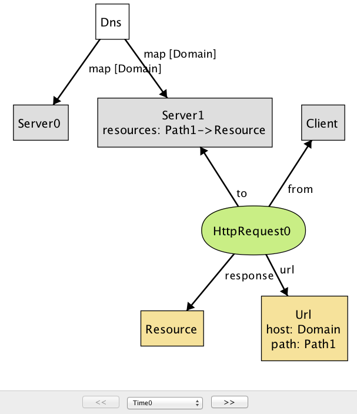
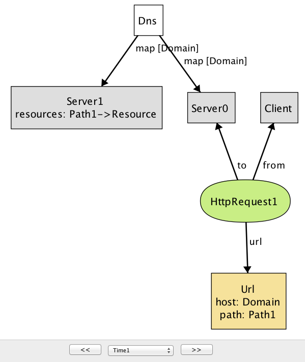
This counterexample again shows an HTTP request being made by a client, but with two different servers. (In the Alloy visualizer, objects of the same type are distinguished by appending numeric suffixes to their names; if there is only one object of a given type, no suffix is added. Every name that appears in a snapshot diagram is the name of an object. So—perhaps confusingly at first sight—the namesDomain, Path, Resource, Url all refer to individual
objects, not to types.)
Note that while the DNS maps Domain to both Server0 and
Server1 (in reality, this is a common practice for load balancing),
only Server1 maps Path to a resource object, causing
HttpRequest1 to result in an empty response: another error in our
model. To fix this, we add an Alloy fact recording
that any two servers to which DNS maps a single host provide the same
set of resources:
fact ServerAssumption {
all s1, s2: Server |
(some Dns.map.s1 & Dns.map.s2) implies s1.resources = s2.resources
}
When we re-run the check command after adding this fact, the
analyzer no longer reports any counterexamples for the property. This
doesn’t mean the property has been proven to be true, since there
might be a counterexample in a larger scope. But it is unlikely that
the property is false, since the analyzer has tested all possible
instances involving 3 objects of each type.
If desired, however, we can re-run the analysis with a larger scope for increased confidence. For example, running the above check with the scope of 10 still does not produce any counterexample, suggesting that the property is likely to be valid. However, keep in mind that given a larger scope, the analyzer needs to test a greater number of instances, and so it will likely take longer to complete.
Browser
Let’s now introduce browsers into our model:
sig Browser extends Client {
documents: Document -> Time,
cookies: Cookie -> Time,
}
This is our first example of a signature with dynamic fields. Alloy
has no built-in notions of time or behavior, which means that a
variety of idioms can be used. In this model, we’re using a common
idiom in which you introduce a notion of Time, and attach it as a
final column for every time-varying field. For example, the expression
b.cookies.t represents the set of cookies that are stored in browser
b at a particular time t. Likewise, the documents field associates
a set of documents with each browser at a given time. (For more details
about how we model the dynamic behavior, see Section: Appendix: Reusing Modules in Alloy.)
Documents are created from a response to an HTTP request. They can also be destroyed if, for example, the user closes a tab or the browser, but we leave this out of the model. A document has a URL (the one from which the document was originated), some content (the DOM), and a domain:
sig Document {
src: Url,
content: Resource -> Time,
domain: Domain -> Time
}
The inclusion of the Time column for the latter two fields tells us
that they can vary over time, and its omission for the first (src,
representing the source URL of the document) indicates that the source
URL is fixed.
To model the effect of an HTTP request on a browser, we introduce a new signature, since not all HTTP requests will originate at the level of the browser; the rest will come from scripts.
sig BrowserHttpRequest extends HttpRequest {
doc: Document
}{
-- the request comes from a browser
from in Browser
-- the cookies being sent exist in the browser at the time of the request
sentCookies in from.cookies.start
-- every cookie sent must be scoped to the url of the request
all c: sentCookies | url.host in c.domains
-- a new document is created to display the content of the response
documents.end = documents.start + from -> doc
-- the new document has the response as its contents
content.end = content.start ++ doc -> response
-- the new document has the host of the url as its domain
domain.end = domain.start ++ doc -> url.host
-- the document's source field is the url of the request
doc.src = url
-- new cookies are stored by the browser
cookies.end = cookies.start + from -> sentCookies
}
This kind of request has one new field, doc, representing the
document created in the browser from the resource returned by the
request. As with HttpRequest, the behavior is described as a
collection of constraints. Some of these say when the call can happen:
for example, that the call has to come from a browser. Some constrain
the arguments of the call: for example, that the cookies must be
scoped appropriately. And some constrain the effect, using a common
idiom that relates the value of a relation after the call to its value
before.
For example, to understand the constraint documents.end =
documents.start + from -> doc remember that documents is a 3-column
relation on browsers, documents and times. The fields start and
end come from the declaration of Call (which we haven’t seen, but
is included in the listing at the end), and represent the times at the
beginning and end of the call. The expression documents.end gives
the mapping from browsers to documents when the call has ended. So
this constraint says that after the call, the mapping is the same,
except for a new entry in the table mapping from to doc.
Some constraints use the ++ relational override operator: e1 ++ e2
contains all tuples of e2, and additionally, any tuples of e1
whose first element is not the first element of a tuple in e2. For
example, the constraint content.end = content.start ++ doc ->
response says that after the call, the content mapping will be
updated to map doc to response (overriding any previous mapping of
doc). If we were to use the union operator + instead, then the
same document might (incorrectly) be mapped to multiple resources in
the after state.
Script
Next, we will build on the HTTP and browser models to introduce client-side scripts, which represent pieces of code (typically in JavaScript) executing inside a browser document (context).
sig Script extends Client { context: Document }
A script is a dynamic entity that can perform two different kinds of action: (1) it can make HTTP requests (i.e., Ajax requests) and (2) it can perform browser operations to manipulate the content and properties of a document. The flexibility of client-side scripts is one of the main catalysts of the rapid development of Web 2.0, but is also the reason why the SOP was created in the first place. Without the SOP, scripts would be able to send arbitrary requests to servers, or freely modify documents inside the browser—which would be bad news if one or more of the scripts turned out to be malicious.
A script can communicate to a server by sending an XmlHttpRequest:
sig XmlHttpRequest extends HttpRequest {}{
from in Script
noBrowserChange[start, end] and noDocumentChange[start, end]
}
An XmlHttpRequest can be used by a script to send/receive resources
to/from a server, but unlike BrowserHttpRequest, it does not
immediately result in the creation of a new page or other changes to the
browser and its documents. To say that a call does not modify these
aspects of the system, we define predicates noBrowserChange and
noDocumentChange:
pred noBrowserChange[start, end: Time] {
documents.end = documents.start and cookies.end = cookies.start
}
pred noDocumentChange[start, end: Time] {
content.end = content.start and domain.end = domain.start
}
What kind of operations can a script perform on documents? First, we introduce a generic notion of browser operations to represent a set of browser API functions that can be invoked by a script:
abstract sig BrowserOp extends Call { doc: Document }{
from in Script and to in Browser
doc + from.context in to.documents.start
noBrowserChange[start, end]
}
Field doc refers to the document that will be accessed or
manipulated by this call. The second constraint in the signature facts
says that both doc and the document in which the script executes
(from.context) must be documents that currently exist inside the
browser. Finally, a BrowserOp may modify the state of a document,
but not the set of documents or cookies that are stored in the
browser. (Actually, cookies can be associated with a document and
modified using a browser API, but we omit this detail for now.)
A script can read from and write to various parts of a document
(usually called DOM elements). In a typical browser, there are a large
number of API functions for accessing the DOM (e.g.,
document.getElementById), but enumerating all of them is not
important for our purpose. Instead, we will simply group them into two
kinds—ReadDom and WriteDom—and model modifications as
wholesale replacements of the entire document:
sig ReadDom extends BrowserOp { result: Resource }{
result = doc.content.start
noDocumentChange[start, end]
}
sig WriteDom extends BrowserOp { newDom: Resource }{
content.end = content.start ++ doc -> newDom
domain.end = domain.start
}
ReadDom returns the content of the target document, but does not modify it; WriteDom, on the other hand, sets the new content of the target document to newDom.
In addition, a script can modify various properties of a document, such as its width, height, domain, and title. For our discussion of the SOP, we are only interested in the domain property, which we will introduce in a later section.
Example Applications
As we’ve seen earlier, given a run or check command, the Alloy
Analyzer generates a scenario (if it exists) that is consistent with
the description of the system in the model. By default, the analyzer
arbitrarily picks any one of the possible system scenarios (up to
the specified bound), and assigns numeric identifiers to signature
instances (Server0, Browser1, etc.) in the scenario.
Sometimes, we may wish to analyze the behavior of a particular web application, instead of exploring scenarios with a random configuration of servers and clients. For example, imagine that we wish to build an email application that runs inside a browser (like Gmail). In addition to providing basic email features, our application might display a banner from a third-party advertisement service, which is controlled by a potentially malicious actor.
In Alloy, the keywords one sig introduce a singleton signature
containing exactly one object; we saw an example above with
Dns. This syntax can be used to specify concrete atoms. For example,
to say that there is one inbox page and one ad banner (each of which
is a document) we can write:
one sig InboxPage, AdBanner extends Document {}
With this declaration, every scenario that Alloy generates will
contain at least these two Document objects.
Likewise, we can specify particular servers, domains and so on, with a
constraint (which we’ve called Configuration) to specify the
relationships between them:
one sig EmailServer, EvilServer extends Server {}
one sig EvilScript extends Script {}
one sig EmailDomain, EvilDomain extends Domain {}
fact Configuration {
EvilScript.context = AdBanner
InboxPage.domain.first = EmailDomain
AdBanner.domain.first = EvilDomain
Dns.map = EmailDomain -> EmailServer + EvilDomain -> EvilServer
}
For example, the last constraint in the fact specifies how the DNS is
configured to map domain names for the two servers in our
system. Without this constraint, the Alloy Analyzer may generate
scenarios where EmailDomain is mapped to EvilServer, which are not
of interest to us. (In practice, such a mapping may be possible due to
an attack called DNS spoofing, but we will rule it out from our
model since it lies outside the class of attacks that the SOP is
designed to prevent.)
Let us introduce two additional applications: an online calendar and a blog site:
one sig CalendarServer, BlogServer extends Document {}
one sig CalendarDomain, BlogDomain extends Domain {}
We should update the constraint about the DNS mapping above to incorporate the domain names for these two servers:
fact Configuration {
...
Dns.map = EmailDomain -> EmailServer + EvilDomain -> EvilServer +
CalendarDomain -> CalendarServer + BlogDomain -> BlogServer
}
In addition, let us say that that the email, blog, and calendar applications
are all developed by a single organization, and thus, share the same base
domain name. Conceptually, we can think of EmailServer and CalendarServer
having subdomains email and calendar, sharing example.com as the common
superdomain. In our model, this can be represented by introducing a domain name
that subsumes others:
one sig ExampleDomain extends Domain {}{
subsumes = EmailDomain + EvilDomain + CalendarDomain + this
}
Note that this is included as a member of subsumes, since every
domain name subsumes itself.
There are other details about these applications that we omit here
(see example.als for the full model). But we will revisit these
applications as our running example throughout the remainder of this
chapter.
Security Properties
Before we get to the SOP itself, there is an important question that we have not discussed yet: What exactly do we mean when we say our system is secure?
Not surprisingly, this is a tricky question to answer. For our purposes, we will turn to two well-studied concepts in information security—confidentiality and integrity. Both of these concepts talk about how information should be allowed to pass through the various parts of the system. Roughly, confidentiality means that a critical piece of data should only be accessible to parts that are deemed trusted, and integrity means that trusted parts only rely on data that have not been maliciously tampered with.
Dataflow Properties
In order to specify these security properties more precisely, we first
need to define what it means for a piece of data to flow from one
part of the system to another. In our model so far, we have described
interactions between two endpoints as being carried out through
calls; e.g., a browser interacts with a server by making HTTP
requests, and a script interacts with the browser by invoking browser
API operations. Intuitively, during each call, a piece of data may flow
from one endpoint to another as an argument or return value of the
call. To represent this, we introduce a notion of DataflowCall into the
model, and associate each call with a set of args and returns data
fields:
sig Data in Resource + Cookie {}
sig DataflowCall in Call {
args, returns: set Data, --- arguments and return data of this call
}{
this in HttpRequest implies
args = this.sentCookies + this.body and
returns = this.receivedCookies + this.response
...
}
For example, during each call of type HttpRequest, the client
transfers sentCookies and body to the server, and
receives receivedCookies and response as return values.
More generally, arguments flow from the sender of the call to the
receiver, and return values flow from the receiver to the sender. This
means that the only way for an endpoint to access a new piece of data
is by receiving it as an argument of a call that the endpoint accepts,
or a return value of a call that the endpoint invokes. We introduce a
notion of DataflowModule, and assign field accesses to represent the
set of data elements that the module can access at each time step:
sig DataflowModule in Endpoint {
-- Set of data that this component initially owns
accesses: Data -> Time
}{
all d: Data, t: Time - first |
-- This endpoint can only access a piece of data "d" at time "t" only when
d -> t in accesses implies
-- (1) It already had access in the previous time step, or
d -> t.prev in accesses or
-- there is some call "c" that ended at "t" such that
some c: Call & end.t |
-- (2) the endpoint receives "c" that carries "d" as one of its arguments or
c.to = this and d in c.args or
-- (3) the endpoint sends "c" that returns "d"
c.from = this and d in c.returns
}
We also need to restrict data elements that a module can provide as arguments or return values of a call. Otherwise, we may get weird scenarios where a module can make a call with an argument that it has no access to.
sig DataflowCall in Call { ... } {
-- (1) Any arguments must be accessible to the sender
args in from.accesses.start
-- (2) Any data returned from this call must be accessible to the receiver
returns in to.accesses.start
}
Now that we have means to describe data flow between different parts of the system, we are (almost) ready to state security properties that we care about. But recall that confidentiality and integrity are context-dependent notions; these properties make sense only if we can talk about some agents within the system as being trusted (or malicious). Similarly, not all information is equally important: we need to distinguish between data elements that we consider to be critical or malicious (or neither):
sig TrustedModule, MaliciousModule in DataflowModule {}
sig CriticalData, MaliciousData in Data {}
Then, the confidentiality property can be stated as an assertion on the flow of critical data into non-trusted parts of the system:
// No malicious module should be able to access critical data
assert Confidentiality {
no m: Module - TrustedModule, t: Time |
some CriticalData & m.accesses.t
}
The integrity property is the dual of confidentiality:
// No malicious data should ever flow into a trusted module
assert Integrity {
no m: TrustedModule, t: Time |
some MaliciousData & m.accesses.t
}
Threat Model
A threat model describes a set of actions that an attacker may perform in an attempt to compromise a security property of a system. Building a threat model is an important step in any secure system design; it allows us to identify (possibly invalid) assumptions that we have about the system and its environment, and prioritize different types of risks that need to be mitigated.
In our model, we consider an attacker that can act as a server, a script or a client. As a server, the attacker may set up malicious web pages to solicit visits from unsuspecting users, who, in turn, may inadvertently send sensitive information to the attacker as part of a HTTP request. The attacker may create a malicious script that invokes DOM operations to read data from other pages and relays those data to the attacker’s server. Finally, as a client, the attacker may impersonate a normal user and send malicious requests to a server in an attempt to access the user’s data. We do not consider attackers that eavesdrop on the connection between different network endpoints; although it is a threat in practice, the SOP is not designed to prevent it, and thus it lies outside the scope of our model.
Checking Properties
Now that we have defined the security properties and the attacker’s
behavior, let us show how the Alloy Analyzer can be used to
automatically check that those properties hold even in the presence of
the attacker. When prompted with a check command, the analyzer
explores all possible dataflow traces in the system and produces a
counterexample (if one exists) that demonstrates how an assertion
might be violated:
check Confidentiality for 5
For example, when checking the model of our example application against the
confidentiality property, the analyzer generates the scenario seen in
Figure: Confidentiality counterexample at time 0 and
Figure: Confidentiality counterexample at time 1, which shows how
EvilScript may access a piece of critical data (MyInboxInfo).
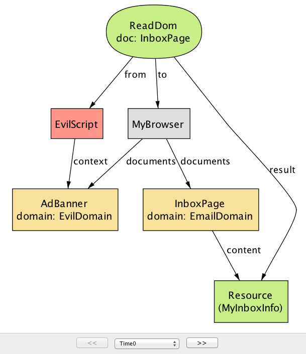
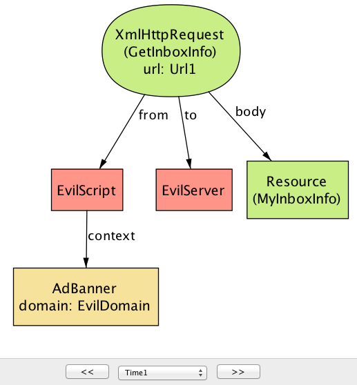
This counterexample involves two steps. In the first step (Figure: Confidentiality counterexample at time 0),EvilScript, executing inside AdBanner from EvilDomain, reads the content of InboxPage, which originates from EmailDomain. In the next step (Figure: Confidentiality counterexample at time 1), EvilScript sends the same content (MyInboxInfo) to EvilServer by making an XmlHtttpRequest call. The core of the problem here is that a script executing under one domain is able to read the content of a document from another domain; as we will see in the next section, this is exactly one of the scenarios that the SOP is designed to prevent.
There may be multiple counterexamples to a single assertion. Consider Figure: Another confidentiality violation, which shows a different way in which the system may violate the confidentiality property.
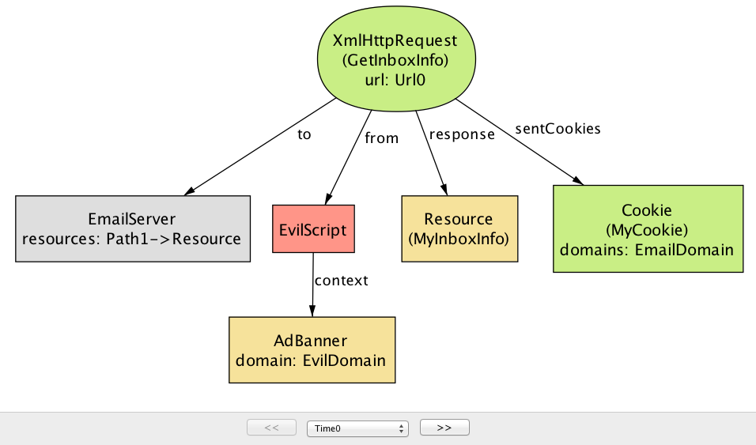
In this scenario, instead of reading the content of the inbox page,EvilScript directly makes a GetInboxInfo request to EmailServer.
Note that the request includes a cookie (MyCookie), which is scoped
to the same domain as the destination server. This is potentially
dangerous, because if the cookie is used to represent the user’s
identity (e.g., a session cookie), EvilScript can effectively
pretend to be the user and trick the server into responding with the
user’s private data (MyInboxInfo). Here, the problem is again
related to the liberal ways in which a script may be used to access
information across different domains—namely, that a script executing
under one domain is able to make an HTTP request to a server with a
different domain.
These two counterexamples tell us that extra measures are needed to restrict the behavior of scripts, especially since some of those scripts could be malicious. This is exactly where the SOP comes in.
Same-Origin Policy
Before we can state the SOP, the first thing we should do is to introduce the notion of an origin, which is composed of a protocol, host, and optional port:
sig Origin {
protocol: Protocol,
host: Domain,
port: lone Port
}
For convenience, let us define a function that, given a URL, returns the corresponding origin:
fun origin[u: Url] : Origin {
{o: Origin | o.protocol = u.protocol and o.host = u.host and o.port = u.port }
}
fact domSop {
all o: ReadDom + WriteDom | let target = o.doc, caller = o.from.context |
origin[target] = origin[caller]
}
domSop, since Script is not allowed to invoke ReadDom on a document from a different origin.
The second part of the policy says that a script cannot send an HTTP request to a server unless its context has the same origin as the target URL—effectively preventing instances such as the second script scenario.
fact xmlHttpReqSop {
all x: XmlHttpRequest | origin[x.url] = origin[x.from.context.src]
}
It turns out, however, that the SOP can be too restrictive. For
example, sometimes you do want to allow communication between two
documents of different origins. By the above definition of an origin,
a script from foo.example.com would not be able to read the content
of bar.example.com, or send a HTTP request to www.example.com,
because these are all considered distinct hosts.
In order to allow some form of cross-origin communication when necessary, browsers implemented a variety of mechanisms for relaxing the SOP. Some of these are more well-thought-out than others, and some have pitfalls that, when badly used, can undermine the security benefits of the SOP. In the following sections, we will describe the most common of these mechanisms, and discuss their potential security pitfalls.
Techniques for Bypassing the SOP
The SOP is a classic example of the tension between functionality and security; we want to make sure our sites are robust and functional, but the mechanism for securing it can sometimes get in the way. Indeed, when the SOP was initially introduced, developers ran into trouble building sites that made legitimate uses of cross-domain communication (e.g., mashups).
In this section, we will discuss four techniques that have been
devised and frequently used by web developers to bypass the
restrictions imposed by the SOP: (1) The document.domain property
relaxation; (2) JSONP; (3) PostMessage; and (4) CORS. These are valuable
tools, but if used without caution, may render a web application
vulnerable to exactly the kinds of attacks that the SOP was designed
to thwart in the first place.
Each of these four techniques is surprisingly complex, and if described in full detail, would merit its own chapter. So here we just give a brief impression of how they work, potential security problems that they introduce, and how to prevent these problems. In particular, we will ask the Alloy Analyzer to check, for each technique, whether it could be abused by an attacker to undermine the two security properties that we defined earlier:
check Confidentiality for 5
check Integrity for 5
Based on insights from the counterexamples that the analyzer generates, we will discuss guidelines for safely using these techniques without falling into security pitfalls.
Domain Property
As the first technique on our list, we will look at the use of the
document.domain property as a way of bypassing the SOP. The idea
behind this technique is to allow two documents from different origins
to access each other’s DOM simply by setting the document.domain
property to the same value. So, for example, a script from
email.example.com could read or write the DOM of a document from
calendar.example.com if the scripts in both documents set the
document.domain property to example.com (assuming both source URLs
have also the same protocol and port).
We model the behavior of setting the document.domain property as a type
of browser operation called SetDomain:
// Modify the document.domain property
sig SetDomain extends BrowserOp { newDomain: Domain }{
doc = from.context
domain.end = domain.start ++ doc -> newDomain
-- no change to the content of the document
content.end = content.start
}
The newDomain field represents the value to which the property should be set.
There’s a caveat, though: scripts can only set the domain property to
a right-hand, fully qualified fragment of its hostname.
(I.e., email.example.com can set it to example.com but not to
google.com.) We use a fact to capture this rule about subdomains:
// Scripts can only set the domain property to only one that is a right-hand,
// fully-qualified fragment of its hostname
fact setDomainRule {
all d: Document | d.src.host in (d.domain.Time).subsumes
}
If it weren’t for this rule, any site could set the document.domain
property to any value, which means that, for example, a malicious site
could set the domain property to your bank domain, load your bank
account in an iframe, and (assuming the bank page has set its domain
property) read the DOM of your bank page.
Let us go back to our original definition of the SOP, and relax its
restriction on DOM access in order to take into account the effect of
the document.domain property. If two scripts set the property to the
same value, and they have the same protocol and port, then these two
scripts can interact with each other (that is, read and write each
other’s DOM).
fact domSop {
-- For every successful read/write DOM operation,
all o: ReadDom + WriteDom | let target = o.doc, caller = o.from.context |
-- (1) target and caller documents are from the same origin, or
origin[target] = origin[caller] or
-- (2) domain properties of both documents have been modified
(target + caller in (o.prevs <: SetDomain).doc and
-- ...and they have matching origin values.
currOrigin[target, o.start] = currOrigin[caller, o.start])
}
Here, currOrigin[d, t] is a function that returns the origin of document d with the property document.domain at time t as its hostname.
It is worth pointing out that the document.domain properties for
both documents must be explictly set sometime after they
are loaded into the browser. Let us say that document A is
loaded from example.com, and document B from calendar.example.com has
its domain property modified to example.com. Even though the two
documents now have the same domain property, they will not be able to
interact with each other, unless document A also explictly sets its
property to example.com. At first, this seems like a rather strange
behavior. However, without this, various bad things can happen. For
example, a site could be subject to a cross-site scripting attack from
its subdomains: A malicious script in document B might modify
its domain property to example.com and manipulate the DOM of
document A, even though the latter never intended to interact with
document B.
Analysis: Now that we have relaxed the SOP to allow
cross-origin communication under certain circumstances, do the
security guarantees of the SOP still hold? Let us ask the Alloy
Analyzer to tell us whether the document.domain property could be
abused by an attacker to access or tamper with a user’s sensitive data.
Indeed, given the new, relaxed definition of the SOP, the analyzer generates a counterexample scenario to the confidentiality property:
check Confidentiality for 5
This scenario consists of five steps; the first three steps show a typical use of document.domain, where two documents from distinct origins, CalendarPage and InboxPage, communicate by setting their domain properties to a common value (ExampleDomain). The last two steps introduce another document, BlogPage, that has been compromised with a malicious script that attempts to access the content of the other two documents.
At the beginning of the scenario
(Figure: Cross-origin counterexample at time 0 and
Figure: Cross-origin counterexample at time 1), InboxPage and
CalendarPage have domain properties with two distinct values (EmailDomain
and ExampleDomain, respectively), so the browser will prevent them from
accessing each other’s DOM. The scripts running inside the documents
(InboxScript and CalendarScript) each execute the SetDomain operation to
modify their domain properties to ExampleDomain (which is allowed because
ExampleDomain is a superdomain of the original domain).
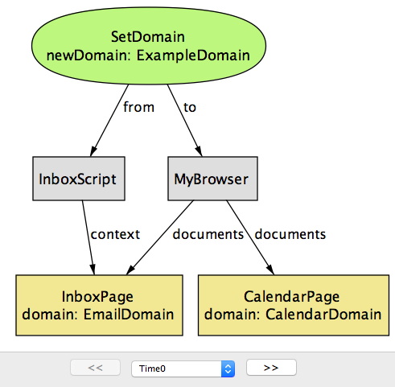
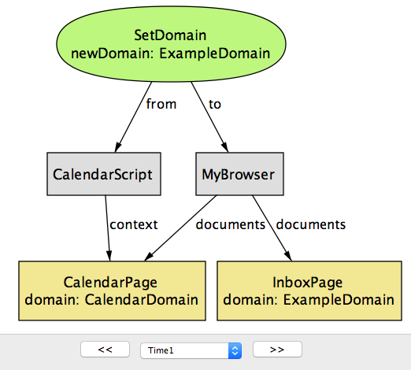
Having done this, they can now access each other’s DOM by executingReadDom or WriteDom operations, as in Figure: Cross-origin counterexample at time 2.
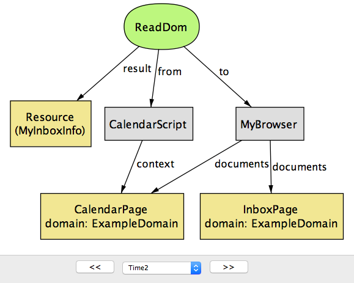
Note that when you set the domain ofemail.example.com
and calendar.example.com to example.com, you are allowing not only
these two pages to communicate between each other, but also any
other page that has example.com as a superdomain
(e.g., blog.example.com). An attacker also realizes this, and
constructs a special script (EvilScript) that runs inside the
attacker’s blog page (BlogPage). In the next step (Figure: Cross-origin counterexample at time 3), the script executes the SetDomain operation to modify the domain property of BlogPage to ExampleDomain.
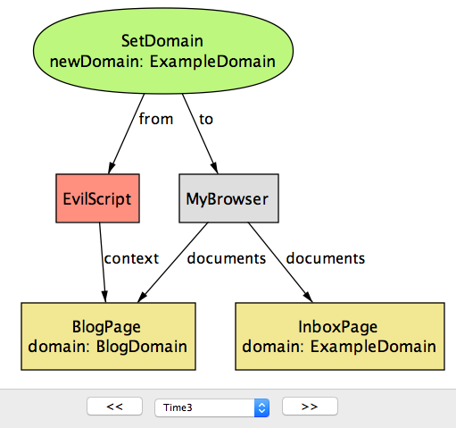
Now thatBlogPage has the same domain property as the other two documents, it can successfully execute the ReadDOM operation to access their content (Figure: Cross-origin counterexample at time 4.)
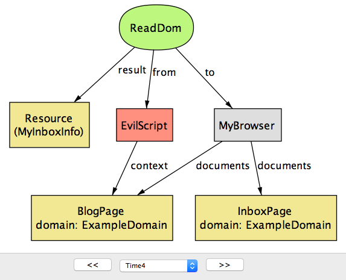
This attack points out one crucial weakness of the domain property method for cross-origin communication: The security of an application that uses this method is only as strong as the weakest link in all of the pages that share the same base domain. We will shortly discuss another method called PostMessage, which can be used for a more general class of cross-origin communication while also being more secure.JSON with Padding (JSONP)
Before the introduction of CORS (which we will discuss shortly), JSONP
was perhaps the most popular technique for bypassing the SOP
restriction on XMLHttpRequest, and still remains widely used
today. JSONP takes advantage of the fact that script inclusion tags in
HTML (i.e., <script>) are exempt from the SOP*; that is, you can
include a script from any URL, and the browser readily executes it
in the current document:
(* Without this exemption, it would not be possible to load JavaScript libraries, such as JQuery, from other domains.)
<script src="http://www.example.com/myscript.js"></script>
A script tag can be used to obtain code, but how do we use it to
receive arbitrary data (e.g., a JSON object) from a different
domain? The problem is that the browser expects the content of src
to be a piece of JavaScript code, and so simply having it point at a
data source (e.g., a JSON or HTML file) results in a syntax error.
One workaround is to wrap the desired data inside a string that the browser recognizes as valid JavaScript code; this string is sometimes called padding (hence the name “JSON with padding”). This padding could be any arbitrary JavaScript code, but conventionally, it is the name of a callback function (already defined in the current document) that is to be executed on the response data:
<script src="http://www.example.com/mydata?jsonp=processData"></script>
The server on www.example.com recognizes it as a JSONP request, and wraps the requested data inside the jsonp parameter:
processData(mydata)
which is a valid JavaScript statement (namely, the application of function “processData” on value “mydata”), and is executed by the browser in the current document.
In our model, JSONP is modeled as a kind of HTTP request that includes
the identifier of a callback function in the field padding. After
receiving a JSONP request, the server returns a response that has the
requested resource (payload) wrapped inside the callback function
(cb).
sig CallbackID {} // identifier of a callback function
// Request sent as a result of <script> tag
sig JsonpRequest in BrowserHttpRequest {
padding: CallbackID
}{
response in JsonpResponse
}
sig JsonpResponse in Resource {
cb: CallbackID,
payload: Resource
}
When the browser receives the response, it executes the callback function on the payload:
sig JsonpCallback extends EventHandler {
cb: CallbackID,
payload: Resource
}{
causedBy in JsonpRequest
let resp = causedBy.response |
cb = resp.@cb and
-- result of JSONP request is passed on as an argument to the callback
payload = resp.@payload
}
(EventHandler is a special type of call that must take place sometime after another call, which is denoted by causedBy; we will use event handlers to model actions that are performed by scripts in response to browser events.)
Note that the callback function executed is the same as the one that’s
included in the response (cb = resp.@cb), but not necessarily the
same as padding in the original JSONP request. In other words, for
the JSONP communication to work, the server is responsible for
properly constructing a response that includes the original padding as
the callback function (i.e., ensure that JsonRequest.padding =
JsonpResponse.cb). In principle, the server can choose to include any
callback function (or any piece of JavaScript), including one that has
nothing to do with padding in the request. This highlights a
potential risk of JSONP: the server that accepts the JSONP requests
must be trustworthy and secure, because it has the ability to execute
any piece of JavaScript code in the client document.
Analysis: Checking the Confidentiality property with
the Alloy Analyzer returns a counterexample that shows one potential
security risk of JSONP. In this scenario, the calendar application
(CalendarServer) makes its resources available to third-party sites
using a JSONP endpoint (GetSchedule). To restrict access to the
resources, CalendarServer only sends back a response with the
schedule for a user if the request contains a cookie that correctly
identifies that user.
Note that once a server provides an HTTP endpoint as a JSONP service,
anyone can make a JSONP request to it, including malicious sites. In
this scenario, the ad banner page from EvilServer includes a
script tag that causes a GetSchedule request, with a callback
function called Leak as padding. Typically, the developer of
AdBanner does not have direct access to the victim user’s session
cookie (MyCookie) for CalendarServer. However, because the JSONP
request is being sent to CalendarServer, the browser automatically
includes MyCookie as part of the request; CalendarServer, having
received a JSONP request with MyCookie, will return the victim’s
resource (MySchedule) wrapped inside the padding Leak (Figure: JSONP counterexample at time 0.)
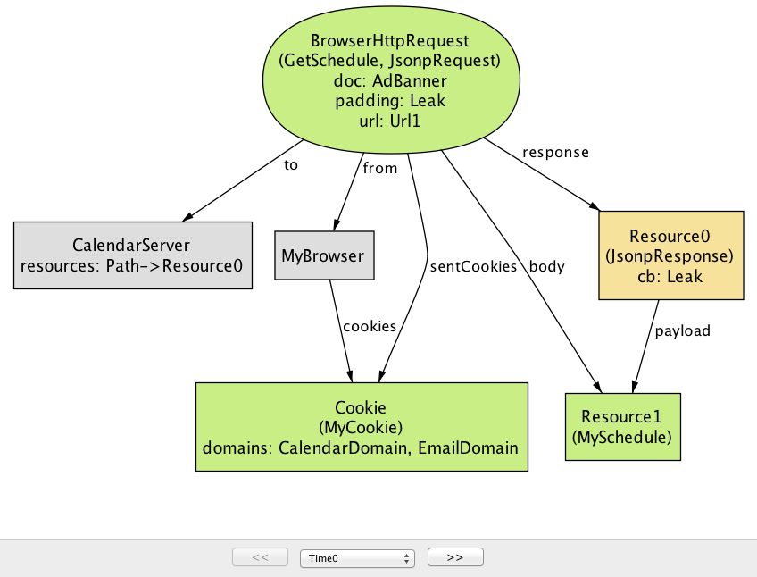
In the next step, the browser interprets the JSONP response as a call toLeak(MySchedule) (Figure: JSONP counterexample at time 1). The rest of the attack is simple; Leak can simply be programmed to forward the input argument to EvilServer, allowing the attacker to access the victim’s sensitive information.
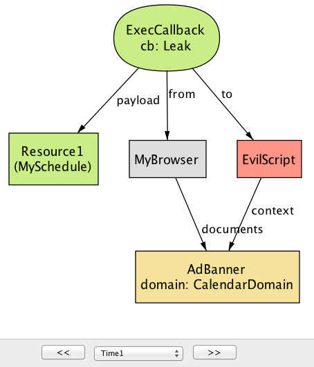
This attack, an example of cross-site request forgery (CSRF), shows an inherent weakness of JSOPN; any site on the web can make a JSONP request simply by including a<script> tag and access the payload inside the padding. The risk can be mitigated in two ways: (1) ensure that a JSONP request never returns sensitive data, or (2) use another mechanism in place of cookies (e.g., secret tokens) to authorize the request.
PostMessage
PostMessage is a new feature in HTML5 that allows scripts from two documents (of possibly different origins) to communicate with each other. It offers a more disciplined alternative to the method of setting the domain property, but brings its own security risks.
PostMessage is a browser API function that takes two arguments: (1) the data to be sent (message), and (2) the origin of the document receiving the message (targetOrigin):
sig PostMessage extends BrowserOp {
message: Resource,
targetOrigin: Origin
}
To receive a message from another document, the receiving document registers an event handler that is invoked by the browser as a consequence of a PostMessage:
sig ReceiveMessage extends EventHandler {
data: Resource,
srcOrigin: Origin
}{
causedBy in PostMessage
-- "ReceiveMessage" event is sent to the script with the correct context
origin[to.context.src] = causedBy.targetOrigin
-- messages match
data = causedBy.@message
-- the origin of the sender script is provided as "srcOrigin" param
srcOrigin = origin[causedBy.@from.context.src]
}
The browser passes two parameters to ReceiveMessage: a resource (data) that corresponds to the message being sent, and the origin of the sender document (srcOrigin). The signature fact contains four constraints to ensure that each ReceiveMessage is well-formed with respect to its corresponding PostMessage.
Analysis: Again, let us ask the Alloy Analyzer whether PostMessage is a secure way of performing cross-origin communication. This time, the analyzer returns a counterexample for the Integrity property, meaning the attacker is able to exploit a weakness in PostMessage to introduce malicious data into a trusted application.
Note that by default, the PostMessage mechanism does not restrict
who is allowed to send PostMessage; in other words, any document can
send a message to another document as long as the latter has
registered a ReceiveMessage handler. For example, in the following
instance generated from Alloy, EvilScript, running inside
AdBanner, sends a malicious PostMessage to a document with the
target origin of EmailDomain (Figure: PostMessage counterexample at time 0.)
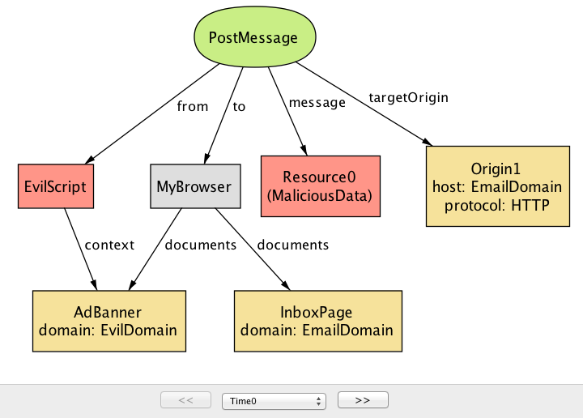
The browser then forwards this message to the document(s) with the corresponding origin (in this case,InboxPage). Unless
InboxScript specifically checks the value of srcOrigin to filter out
messages from unwanted origins, InboxPage will accept the malicious
data, possibly leading to further security attacks. (For example, it
may embed a piece of JavaScript to carry out an XSS attack.) This is shown in Figure: PostMessage counterexample at time 0.
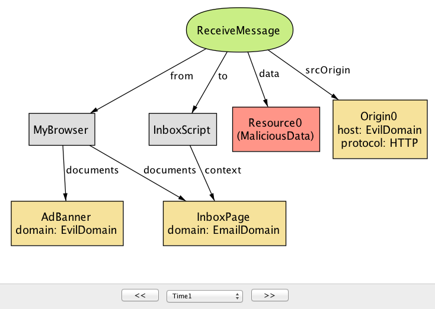
As this example illustrates,PostMessage is not secure by default,
and it is the responsibility of the receiving document to
additionally check the srcOrigin parameter to ensure that the
message is coming from a trustworthy document. Unfortunately, in
practice, many sites omit this check, enabling a malicious document to
inject bad content as part of a PostMessage1.
However, the omission of the origin check may not simply be the result of programmer ignorance. Implementing an appropriate check on an incoming PostMessage can be tricky; in some applications, it is hard to determine in advance the list of trusted origins from which messages are expected to be received. (In some apps, this list may even change dynamically.) This, again, highlights the tension between security and functionality: PostMessage can be used for secure cross-origin communication, but only when a whitelist of trusted origins is known.
Cross-Origin Resource Sharing (CORS)
Cross-Origin Resource Sharing (CORS) is a mechanism designed to allow a server to share its resources with sites from different origins. In particular, CORS can be used by a script from one origin to make requests to a server with a different origin, effectively bypassing the restriction of the SOP on cross-origin Ajax requests.
Briefly, a typical CORS process involves two steps: (1) a script wanting to access a resource from a foreign server includes, in its request, an “Origin” header that specifies the origin of the script, and (2) the server includes an “Access-Control-Allow-Origin” header as part of its response, indicating a set of origins that are allowed to access the server’s resource. Normally, without CORS, a browser would prevent the script from making a cross-origin request in the first place, conforming to the SOP. However, with CORS enabled, the browser allows the script to send the request and access its response, but only if “Origin” is one of the origins specified in “Access-Control-Allow-Origin”.
(CORS additionally includes a notion of preflight requests, not discussed here, to support complex types of cross-origin requests besides GETs and POSTs.)
In Alloy, we model a CORS request as a special kind of
XmlHttpRequest, with two extra fields origin and allowedOrigins:
sig CorsRequest in XmlHttpRequest {
-- "origin" header in request from client
origin: Origin,
-- "access-control-allow-origin" header in response from server
allowedOrigins: set Origin
}{
from in Script
}
We then use an Alloy fact corsRule to describe what constitutes a valid CORS request:
fact corsRule {
all r: CorsRequest |
-- the origin header of a CORS request matches the script context
r.origin = origin[r.from.context.src] and
-- the specified origin is one of the allowed origins
r.origin in r.allowedOrigins
}
Analysis: Can CORS be misused in a way that would allow the
attacker to compromise the security of a trusted site? When prompted,
the Alloy Analyzer returns a simple counterexample for the
Confidentiality property.
Here, the developer of the calendar application decides to share some
of its resources with other applications by using the CORS
mechanism. Unfortunately, CalendarServer is configured to return
Origin (which represents the set of all origin values) for the
access-control-allow-origin header in CORS responses. As a result, a
script from any origin, including EvilDomain, is allowed to make
a cross-site request to CalendarServer and read its response (Figure: CORS counterexample).
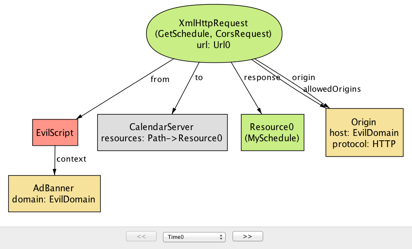
This example highlights one common mistake that developers make with CORS: Using the wildcard value “*” as the value of “access-control-allow-origin” header, allowing any site to access a resource on the server. This access pattern is appropriate if the resource is considered public and accessible to anyone. However, it turns out that many sites use “*” as the default value even for private resources, inadvertently allowing malicious scripts to access them through CORS requests2.Why would a developer ever use the wildcard? It turns out that specifying the allowed origins can be tricky, since it may not be clear at design time which origins should be granted access at runtime (similar to the PostMessage issue discusssed above). A service may, for example, allow third-party applications to subscribe dynamically to its resources.
Conclusion
In this chapter, we set out to construct a document that provides a clear understanding of the SOP and its related mechanisms by building a model of the policy in a language called Alloy. Our model of the SOP is not an implementation in the traditional sense, and can’t be deployed for use, unlike artifacts shown in other chapters. Instead, we wanted to demonstrate the key elements behind our approach to “agile modeling”: (1) starting out with a small, abstract model of the system and incrementally adding details as necessary, (2) specifying properties that the system is expected to satisfy, and (3) applying rigorous analysis to explore potential flaws in the design of the system. Of course, this chapter was written long after the SOP was first introduced, but we believe that this type of modeling would potentially be even more beneficial if it is done during the early stage of system design.
Besides the SOP, Alloy has been used to model and reason about a variety of systems across different domains—ranging from network protocols, semantic web, bytecode security to electronic voting and medical systems. For many of these systems, Alloy’s analysis led to discovery of design flaws and bugs that had eluded the developers, in some cases, for years. We invite our readers to visit the Alloy page and try building a model of their favorite system!
Appendix: Reusing Modules in Alloy
As mentioned earlier in this chapter, Alloy makes no assumptions about the behavior of the system being modeled. The lack of a built-in paradigm allows the user to encode a wide range of modeling idioms using a small core of the basic language constructs. We could, for example, specify a system as a state machine, a data model with complex invariants, a distributed event model with a global clock, or whatever idiom is most suitable for the problem at hand. Commonly used idioms can be captured as a generic module and reused across multiple systems.
In our model of the SOP, we model the system as a set of endpoints that communicate with each other by making one or more calls. Since call is a fairly generic notion, we encapsulate its description in a separate Alloy module, to be imported from other modules that rely on it – similar to standard libraries in programming languages:
module call[T]
In this module declaration, T represents a type parameter that can be
instantiated to a concrete type that is provided when the module is
imported. We will soon see how this type parameter is used.
It is often convenient to describe the system execution as taking
place over a global time frame, so that we can talk about calls as
occurring before or after each other (or at the same time). To
represent the notion of time, we introduce a new signature called Time:
open util/ordering[Time] as ord
sig Time {}
util/ordering is a built-in module that imposes a total
order on the type parameter, and so by importing ordering[Time], we
obtain a set of Time objects that behave like other totally ordered
sets (e.g., natural numbers).
Note that there is absolutely nothing special about Time; we
could have named it any other way (for example, Step or State), and it
wouldn’t have changed the behavior of the model at all. All we are
doing here is using an additional column in a relation as a way of
representing the content of a field at different points in a system
execution; for example, cookies in the Browser signature. In this
sense, Time objects are nothing but helper objects used as a kind of
index.
Each call occurs between two points in time—its start and end
times, and is associated with a sender (represented by from) and a
receiver (to):
abstract sig Call { start, end: Time, from, to: T }
Recall that in our discussion of HTTP requests, we imported the module
call by passing Endpoint as its type parameter. As a result, the
parametric type T is instantiated to Endpoint, and we obtain a set
of Call objects that are associated with a pair of sender and receiver
endpoints. A module can be imported multiple times; for example, we
could declare a signature called UnixProcess, and instantiate the
module call to obtain a distinct set of Call objects that are sent
from one Unix process to another.
-
Sooel Son and Vitaly Shmatikov. The Postman Always Rings Twice: Attacking and Defending postMessage in HTML5 Websites. Network and Distributed System Security Symposium (NDSS), 2013. ↩
-
Sebastian Lekies, Martin Johns, and Walter Tighzert. The State of the Cross-Domain Nation. Web 2.0 Security and Privacy (W2SP), 2011. ↩